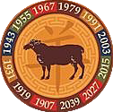

The Chinese Zodiac
The Chinese zodiac is a traditional classification scheme based on the lunar calendar that assigns an animal and its reputed attributes to each year in a repeating twelve-year cycle. In Chinese astrology the animal signs assigned by year represent how others perceive one or how one presents oneself. (Source:https://en.wikipedia.org/wiki/Chinese_zodiac)
Rat
Recent Years:
1924, 1936, 1948, 1960, 1972, 1984, 1996, 2008, 2020
Personality Traits
Quick-witted, resourceful, versatile, kind

Ox
Recent Years:
1925, 1937, 1949, 1961, 1973, 1985, 1997, 2009, 2021
Personality Traits
Diligent, dependable, strong, determined

Tiger
Recent Years:
1926, 1938, 1950, 1962, 1974, 1986, 1998, 2010, 2022
Personality Traits
Brave, confident, competitive

Rabbit
Recent Years:
1927, 1939, 1951, 1963, 1975, 1987, 1999, 2011, 2023
Personality Traits
Quiet, elegant, kind, responsible

Dragon
Recent Years:
1928, 1940, 1952, 1964, 1976, 1988, 2000, 2012, 2024
Personality Traits
Confident, intelligent, enthusiastic

Snake
Recent Years:
1929, 1941, 1953, 1965, 1977, 1989, 2001, 2013, 2025
Personality Traits
Enigmatic, intelligent, wise

Horse
Recent Years:
1930, 1942, 1954, 1966, 1978, 1990, 2002, 2014, 2026
Personality Traits
Animated, active, energetic

Goat
Recent Years:
1931, 1943, 1955, 1967, 1979, 1991, 2003, 2015, 2027
Personality Traits
Calm, gentle, sympathetic

Monkey
Recent Years:
1932, 1944, 1956, 1968, 1980, 1992, 2004, 2016, 2028
Personality Traits
Sharp, smart, curiosity

Rooster
Recent Years:
1933, 1945, 1957, 1969, 1981, 1993, 2005, 2017, 2029
Personality Traits
Observant, hardworking, courageous

Dog
Recent Years:
1934, 1946, 1958, 1970, 1982, 1994, 2006, 2018, 2030
Personality Traits
Lovely, honest, prudent

Pig
Recent Years:
1935, 1947, 1959, 1971, 1983, 1995, 2007, 2019, 2031
Personality Traits
Compassionate, generous, diligent

Source:http://www.creativeartsguild.org/images/uploads/categories/12_Chinese_Zodiac_Signs.pdf